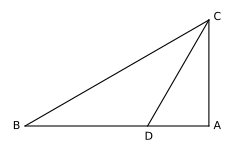
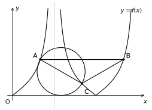
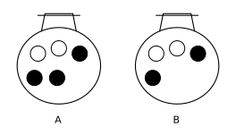
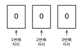

상수 에 대하여 곡선 의 점근선이 곡선 와 만나는 점을 A라 하자. 일 때, 의 값은? (단, O는 원점이다.) [3점]
함수 가 에서 극값을 갖도록 하는 자연수 의 개수는? [4점]
공비가 양수인 등비수열
이
을 만족시킬 때,
의
값은? [4점]
두 점 P와 Q는 시각
일
때 각각 점 A(1)과 점 B(3)에서 출발하여 수직선 위를 움직인다. 두 점 P,
Q의 시각
에서의
속도는 각각
이다. 두 점 P, Q의 위치가 같아지는 시각에서 점 Q의 속도는? [4점]
그림과 같이 인 삼각형 ABC에서 선분 AB를 로 내분하는 점 D에 대하여 이다. 삼각형 ADC의 외접원과 삼각형 BCD의 외접원의 넓이의 비가 일 때, 의 값은? [4점]

함수
과
양수
에
대하여 함수
의 그래프와 직선
로
둘러싸인 도형의 넓이를
라
하자. 양의 실수 전체의 집합에서 정의된 함수
에
대하여 <보기>에서 옳은 것만을 있는 대로 고른 것은? [4점]
<보기>
ㄱ.
ㄴ. 함수 는 에서 극대이다.
ㄷ. 인 모든 실수 에 대하여 가 되도록 하는 서로 다른 두 양수 가 존재할 때, 의 최솟값은 12이다.
상수 에 대하여 집합 에서 정의된 함수 가 있다. 함수 의 그래프 위의 서로 다른 세 점 A, B, C에 대하여 직선 AB는 축과 평행하고 이다. 선분 AC를 지름으로 하는 원이 축과 한 점에서만 만날 때, 삼각형 ABC의 넓이는? (단, 는 상수이다.) [4점]

방정식 를 만족시키는 실수 의 값을 구하시오. [3점]
상수
에
대하여 함수
의
한 부정적분을
라
하고, 함수
의
한 부정적분을
라
하자.
일 때,
의
값을 구하시오. [3점]
모든 항이 자연수인 수열
이
모든 자연수
에
대하여
을 만족시킨다. 다음은
가
되도록 하는 모든
의
값의 합을 구하는 과정이다.
수열 의 모든 항이 자연수이고, 이므로
이다. 에서 인 자연수 의 최솟값이 존재하고, 이 값을 이라 하면
이므로
은 의 양의 약수
이다.(ⅰ) 인 경우
이므로 ㉠과 ㉡에 의하여 이 경우의 모든 의 값의 합은 이다.(ⅱ) 인 경우
이므로 이 경우는 를 만족시킨다. ㉠에 의하여 이 경우의 모든 의 값의 합은 이다.(ⅰ), (ⅱ)에 의하여 가 되도록 하는 모든 의 값의 합은 이다.
위의 (가), (나), (다)에 알맞은 수를 각각 이라 할 때, 의 값을 구하시오. [4점]
※ 확인 사항
○ 답안지의 해당란에 필요한 내용을 정확히 기입(표기)했는지 확인하시오.
○ 이어서, 「선택과목(확률과 통계)」 문제가 제시되니, 자신이 선택한 과목인지 확인하시오.
주머니 A에는 흰 공 2개와 검은 공 3개가 들어 있고, 주머니 B에는 흰 공 2개와 검은 공 2개가 들어 있다. 주머니 A에서 임의로 한 개의 공을 꺼내어 주머니 B에 넣은 후 주머니 B에서 임의로 한 개의 공을 꺼낼 때, 이 공이 검은 공일 확률은? [3점]

의 전개식에서 음수인 상수항이 존재하도록 하는 자연수 의 개수는? [3점]
어느 농장에서 수확하는 애호박 1개의 무게는 평균이 , 표준편차가 30인 정규분포를 따른다고 한다. 이 농장에서 수확하는 애호박 중에서 개를 임의추출하여 얻은 표본평균을 이용하여 구한 에 대한 신뢰도 95%의 신뢰구간이 이다. 이 농장에서 수확하는 애호박 중에서 개를 임의추출하여 얻은 표본평균을 이용하여 구한 에 대한 신뢰도 99%의 신뢰구간이 이다. 의 값은? (단, 무게의 단위는 g이고, 가 표준정규분포를 따르는 확률변수일 때, , 로 계산한다.) [3점]
앞면에는 숫자 0, 뒷면에는 숫자 1이 적혀 있는 3장의 카드가 있다. 이 3장의 카드가 그림과 같이 모두 앞면이 보이도록 놓여 있다.

이 3장의 카드와 한 개의 동전을 사용하여 다음 시행을 한다.
동전을 한 번 던져
앞면이 나오면
3장의 카드 중 임의로 2장의 카드를 선택하여 이 2장의 카드를 모두 보이는 면을 유지한 채 서로 자리를 바꾸어 놓고,
뒷면이 나오면
3장의 카드 중 임의로 1장의 카드를 선택하여 이 1장의 카드를 한 번 뒤집어 제자리에 놓는다.
이 시행을 5번 반복한 후 3장의 카드에 보이는 수가 모두 0일 때, 2번째 시행 후 3장의 카드에 보이는 수가 모두 0일 확률은? [4점]
다음 조건을 만족시키는 자연수 의 모든 순서쌍 의 개수를 구하시오. [4점]
(가)
(나) 인 자연수 가 존재한다.
※ 확인 사항
○ 답안지의 해당란에 필요한 내용을 정확히 기입(표기)했는지 확인하시오.